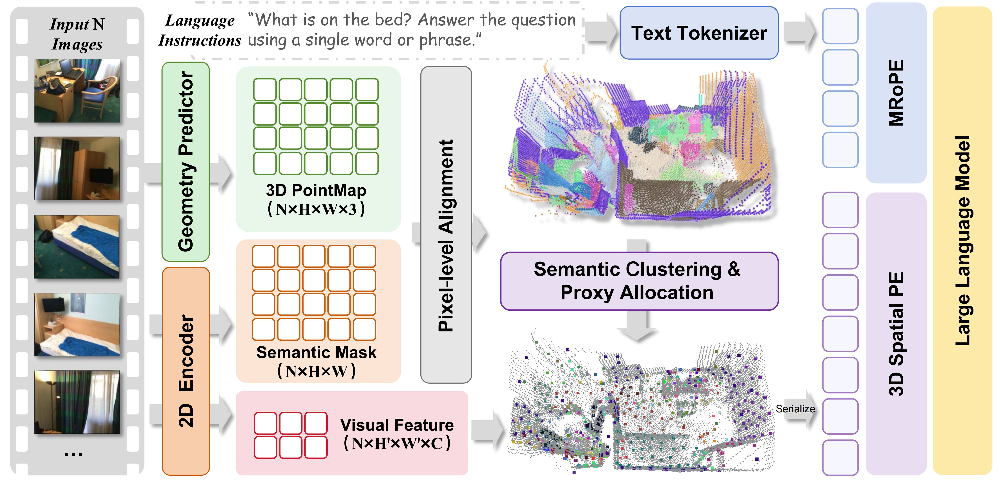
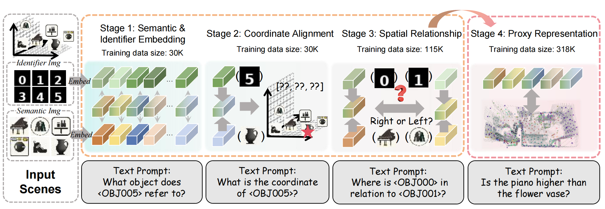
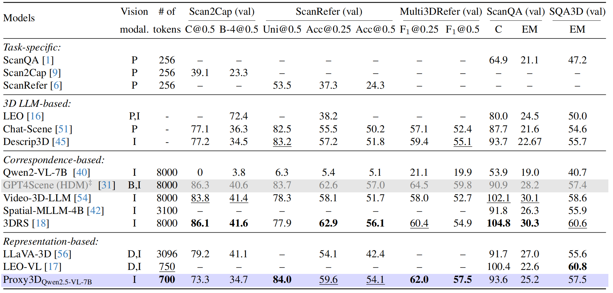
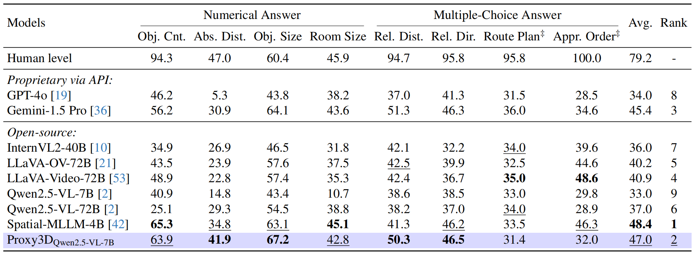

Unified Reasoning Dataset
We curate a 318K SpaceSpan dataset with the unified data format that incorporates heterogeneous visual information for the improvement spatial reasoning skills.
Spatial intelligence in vision-language models (VLMs) attracts research interest with the practical demand to reason in the 3D world.Despite promising results, most existing methods follow the conventional 2D pipeline in VLMs and use pixel-aligned representations for the vision modality. However, correspondence-based models with implicit 3D scene understanding often fail to achieve spatial consistency, and representation-based models with 3D geometric priors lack efficiency in vision sequence serialization. To address this, we propose a Proxy3D method with compact yet comprehensive 3D proxy representations for the vision modality. Given only video frames as input, we employ semantic and geometric encoders to extract scene features and then perform their semantic-aware clustering to obtain a set of proxies in the 3D space. For representation alignment, we further curate the SpaceSpan dataset and apply multi-stage training to adopt the proposed 3D proxy representations with the VLM. When using shorter sequences for vision information, our method achieves competitive or state-of-the-art performance in 3D visual question answering, visual grounding and general spatial intelligence benchmarks.
We curate a 318K SpaceSpan dataset with the unified data format that incorporates heterogeneous visual information for the improvement spatial reasoning skills.
We propose a method for aggregating compact yet comprehensive representations for spatial reasoning by leveraging latent-space clustering as proxies.
We introduce a multi-stage training pipeline that iteratively improves the MLLM's 3D scene understanding with the data-efficient representation alignment.

Overview of Proxy3D structure. A geometry predictor and a semantic encoder output latent features of vision modality. Then, our proxy 3D representations are clustered to reduce complexity. Lastly, multi-stage training aligns proxy features with the language model.

Overview of multi-stage training. Each stage in our progressive iterative training aims to develop a certain spatial intelligence skill from the easiest one to more complex ones: we begin with the simplified image-text alignment to actual images with spatial reasoning.
Comprehensive empirical evaluations using various 3D scene understanding tasks have shown competitive or state-of-the-art performance for Proxy3D while using shorter sequences for visual modality.
We follow the standard evaluation methodology for all benchmarks. We categorize models by their type, used vision modalities (P-point clouds, I-images, B-bird’s-eye-view map, D-depth), sequence length L (# of tokens). The best and the second best results are highlighted. Our Proxy3D with Qwen2.5-VL backbone shows competitive or state-of-the-art results with the shortest sequence lengths. ”‡” means usage of extra information from point clouds.

We use 16 frames as input for Qwen2.5VL-based baselines and, following the VSI-Bench setup, other open-source and proprietary models use from 16 to 32 image frames. The best and the second best results for open-source models are highlighted. Our Proxy3D with Qwen2.5-VL-7B backbone shows overall the second best result. At the same time, the gap with the human-level performance remains significant in spatial reasoning certain tasks. ”‡” indicates tasks not specifically trained.

@article{proxy3d2026,
title = {Proxy3D: Efficient 3D Representations for Vision-Language Models via Semantic Clustering and Alignment},
author = {Jiang, Jerry and Sun, Haowen and Gudovskiy, Denis and Nakata, Yohei and Okuno, Tomoyuki and Keutzer, Kurt and Zheng Wenzhao},
journal = {arXiv preprint arXiv:2605.xxxxx},
year = {2026}
}